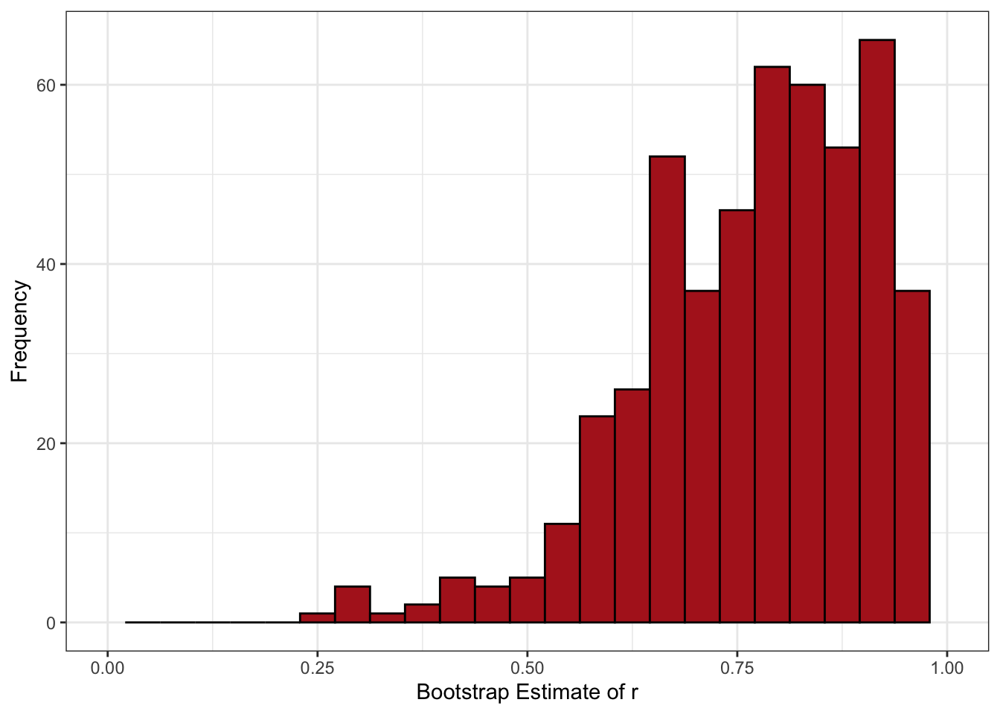
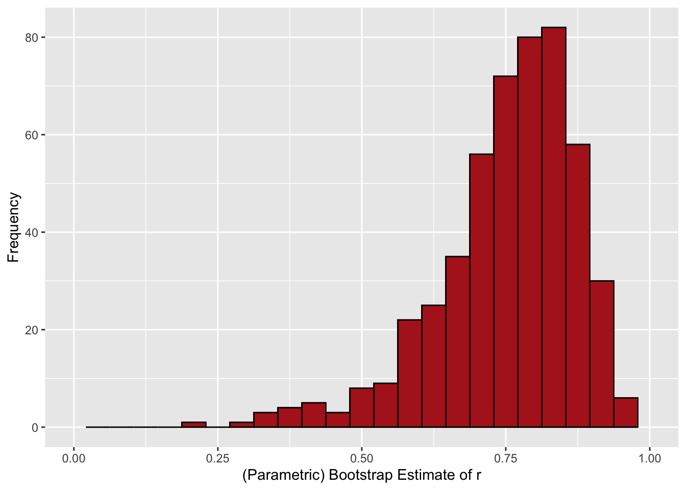

| test | N | Mean | SD |
|---|---|---|---|
| gpa | 15 | 3.09 | 0.24 |
| lsat | 15 | 600.27 | 41.79 |
A Closer Look at the Bootstrap in R
Motivation
Start with the data described in Efron and Tibshriani (1993, page 19). We have 15 paired observations of student LSAT scores and GPAs We want to estimate the correlation between LSAT and GPA scores.
Summary statistics are the following:
The correlation turns out to be 0.776. For reasons we’ll explore, we want to use the nonparametric bootstrap to get a confidence interval around our estimate of \(r\). We do so using the boot package in R.
Steps:
- Define a function that returns the statistic we want.
- Use the
bootfunction to getRbootstrap replicates of the statistic. - Use the
boot.cifunction to get the confidence intervals.
Our function:
get_r <- function(data, indices, x, y) {
d <- data[indices,]
r <- round(as.numeric(cor(d[x], d[y])), 3)
r
}The indices argument is required for any function fed to boot and is used to create the bootstrap samples from the data.
Now we can perform the bootstrapping and request CIs:
set.seed(1006)
boot_out <- boot(data = tbl, x = "lsat", y = "gpa", R = 500,
statistic = get_r)
boot.ci(boot_out)Warning in boot.ci(boot_out): bootstrap variances needed for studentized
intervalsBOOTSTRAP CONFIDENCE INTERVAL CALCULATIONS
Based on 500 bootstrap replicates
CALL :
boot.ci(boot.out = boot_out)
Intervals :
Level Normal Basic
95% ( 0.5107, 1.0479 ) ( 0.5815, 1.1150 )
Level Percentile BCa
95% ( 0.4370, 0.9705 ) ( 0.2714, 0.9439 )
Calculations and Intervals on Original Scale
Some BCa intervals may be unstableA new user may have some questions:
- Why are there multiple CIs? How are they calculated?
- What are the bootstrap variances needed for studentized intervals?
- What does it mean that the calculations and intervals are on the original scale?
- Why are some BCa intervals unstable?
To understand this output, let’s review statistical inference, confidence intervals, and the bootstrap.
Statistical Inference
A commonly used test statistic for determining if \(r \neq 0\) is:
\[ t = \frac{r}{SE_r} \]
where
\[ SE_r = \sqrt{\frac{1-r^2}{n-2}} \]
In our case:
\[ SE_r = \sqrt{\frac{1-r^2}{n-2}} = \sqrt{\frac{1-0.776^2}{15-2}} = 0.175 \]
Dividing \(r\) by \(SE_r\) yields our \(t\) statistic
\[ t = \frac{r}{SE_r} = \frac{0.776}{0.175} = 4.434 \]
We compare this to a \(t\) distribution with \(n-2 = 13\) degrees of freedom and easily find it to be significant given \(\alpha = 0.05\).
In words: If the null hypothesis were true, and we repeatedly draw samples of size \(n\), and then we calculate \(r\) on each sample separately, the probability we would observe an estimate of \(|r| = 0.776\) or larger is less than 5%.
Confidence Intervals
An important caveat. This formula for the standard error is only correct when \(r = 0\). The closer we get to \(\pm 1\), the less correct it is.
We can see why by considering the 95% confidence interval for out estimate. The usual formula you see for a confidence interval is the estimate plus or minus the 97.5th percentile of the normal or \(t\) distribution times the standard error.
\[ \text{95\% CI} = r \pm t_{df,1-\alpha/2} SE_r \]
If we were to sample 15 students repeatedly from our population and calculate this confidence interval each time, the interval should include the true population value 95% of the time.
So what happens if we use the standard formula for the confidence interval?
\[ \begin{align} \text{95\% CI} &= r \pm t_{df = 13}SE_r \\ &= 0.776 \pm 2.16\times 0.175 \\ &= [0.398, 1.154] \end{align} \] Recall that correlations are bounded in the range \([-1, +1]\), but our 95% confidence interval contains values greater than one!
Alternatives:
- Use Fisher’s \(z\)-transformation (what your software will do, but is specific to Pearson’s \(r\)).
- Use the bootstrap (generalizes to most statistics).
Nonparametric Bootstrap
We do not know the true population distribution of LSAT and GPA scores. What we have instead is our sample.
However, just like we can use our sample mean as an estimate of the population mean, we can use our sample distribution as an estimate of the population distribution.
In the absence of supplementary information about the population (e.g. that it follows a specific distribution like bivariate normal), the empirical distribution from our sample contains as much information about the population distribution as we can get.
If statistical inference is typically defined by repeated sampling from a population, and our sample provides a good estimate of the population distribution, we can conduct inferential tasks by repeatedly sampling from our sample.
(Nonparametric) bootstrapping thus works as follows for a sample of size N:
- Draw a random sample of size N with replacement, which is the first bootstrap sample.
- Estimate the statistic of interest using the bootstrap sample.
- Draw a new random sample of size N with replacement, which is the second bootstrap sample.
- Estimate the statistic of interest using the new bootstrap sample.
- Repeat \(k\) times.
- Use the distribution of estimates across the \(k\) bootstrap samples as the sampling distribution.
Note that the sampling is done with replacement. In fact, most results from traditional statistics are based on the assumption of random sampling with replacement. Usually, the population we sample from is large enough that we do not bother noting the “with replacement” part. If the sample is large relative to the population, and sampling without replacement is used, we would typically be advised to use a finite population correction.
This is just to say that the “with replacement” requirement is a standard part of the definition of random sampling.
Let’s take our data as an example. We will draw 500 bootstrap samples, each of size \(n = 15\) drawn with replacement from our original data. The distribution across repeated samples is:

Note a few things about this distribution.
- The distribution is definitely not normal.
- The mean estimate of \(r\) across the 500 bootstrap samples is 0.773. The difference between the mean of the bootstrap estimates \((\mathbb{E}(r_b) = 0.773)\) and the original sample estimate \((r = 0.776)\) is the bias.
- The standard error is the standard deviation of the bootstrap sampling distribution. Here the value is 0.137, which is much smaller than our earlier estimate of 0.175. This is because 0.175 was based on a formula that is only valid when \(r = 0\).
The non-normality of the sampling distribution means that, if we divide \(r\) by the bootstrap standard error, we will not get a statistic that is distributed standard normal or \(t\).
Instead, we can opt to summarize our uncertainty using a bootstrap confidence interval. As we saw above in the R output, however, there are actually multiple bootstrap confidence intervals. Before explaining these different methods, the next section will briefly describe the less often used parametric bootstrap.
Parametric Bootstrap
The prior section noted that, in the absence of supplementary information about the population, the empirical distribution from our sample contains as much information about the population distribution as we can get. An example of supplementary information that may improve our estimates would be if we were to know that the LSAT and GPA scores are distributed bivariate normal. If we are willing to make this assumption, we can use our sample to estimate the population parameters for the bivariate nomral distribution.
Applying this assumption to our sample, we would get:
\[ \begin{pmatrix} \text{LSAT} \\ \text{GPA} \end{pmatrix}\sim N\left(\begin{pmatrix} 600.27 \\ 3.09 \end{pmatrix},\begin{pmatrix} 1746.78 & 7.90 \\ 7.90 & 0.06 \end{pmatrix}\right). \]
Using R to perform Monte Carlo sampling, we can draw 500 random samples of size 15 from this specific distribution and calculate the correlation between the two variables for each.
get_cor <- function(iteration, n) {
dta <- MASS::mvrnorm(n, mu = c(600,3),
Sigma = matrix(c(1747, 7.9, 7.9, .06), 2)) %>%
as.data.frame()
tibble(iteration = iteration,
r = cor(dta$V1, dta$V2))
}
par_boot_tbl <- map_df(1:500, ~get_cor(.x, 15)) The distribution of the correlation estimates across the 500 samples represents our parametric bootstrap sampling distribution. It looks like the following:

The average correlation across the 500 samples was 0.753, and the standard deviation (our estimate of the standard error) was 0.12.
This is smaller than our non-parametric bootstrap estimate of 0.137 reflecting the additional information was are assuming. This in turn reduces sampling variability.
Of course, we often will not feel comfortable saying that the population distribution follows a well-defined shape, and hence we will typically default to the non- or semi-parametric versions of the bootstrap.
Bootstrap Confidence Intervals
Recall that the usual formula for estimating a confidence around a statistic \(\theta\) is something like:
\[ \text{95% CI} = \theta \pm t_{df,1-\alpha/2} SE_{\theta} \]
We saw that using the textbook standard error estimate for a correlation led us astray because we ended up with an interval outside of the range of plausible values. There are a variety of alternative approaches to calculating confidence intervals based on the bootstrap. We’ll walk through the ones most commonly output by software and discuss how they are calculated.
Standard Normal Interval
The first approach simply takes the usual approach for calculating a confidence interval, using the normal distribution value of 1.96 instead of the corresponding percentile from the appropriate t distribution.
There are two differences. First, we use our bootstrap estimate of the standard error in the formula. Second, we make an adjustment for the estimated bias, -0.003:
In our example, we get
\[ \begin{align} \text{95\% CI} &= r - \text{bias} \pm 1.96 \times SE_r \\ &= 0.776 -0.003 \pm 1.96 \times 0.137 \\ &= [0.51, 1.048] \end{align} \]
Check.
boot.ci(boot_out, type = "norm")BOOTSTRAP CONFIDENCE INTERVAL CALCULATIONS
Based on 500 bootstrap replicates
CALL :
boot.ci(boot.out = boot_out, type = "norm")
Intervals :
Level Normal
95% ( 0.5107, 1.0479 )
Calculations and Intervals on Original ScaleProblems:
- If a normal approximation were valid, we probably don’t need to bootstrap.
- We still have a CI outside the appropriate range.
We generally won’t use this method.
Studentized (t) Intervals
Recall that, when we calculate a \(t\)-statistic, we mean-center the original statistic and divide by the standard error. That is,
\[ t = \frac{\hat{\theta} - \theta}{\widehat{SE}_{\theta}} \]
where \(\hat{\theta}\) is the sample estimate of the statistic, \(\theta\) is the true population value (which we get from our null hypothesis), and \(\widehat{SE}_{\theta}\) is the the standard error (based on our sample estimate of the variance).
There is an analog to this process for bootstrap samples. In the bootstrap world, we can convert each bootstrap sample into a \(t\)-score as follows:
\[ t = \frac{\tilde{\theta} - \hat{\theta}}{\widehat{SE}_{\hat{\theta}}} \]
Here \(\tilde{\theta}\) is the statistic estimated from a single bootstrap sample, and \(\hat{\theta}\) is the estimate from the original (non-bootstrap) sample. But where does \(\widehat{SE}_{\hat{\theta}}\) come from?
Recall the message from the R output at the start of the slides that said bootstrap variances needed for studentized intervals. It was saying that, if we want studentized intervals, we need to provide a means for determining the bootstrap sample variance, i.e. \(\widehat{SE}_{\hat{\theta}}\) (squared).
If we’re lucky enough to have a formula for a sample standard error, we can apply that within each bootstrap sample to return a bootstrap \(t\)-statistic. For example, if we were bootstrapping the mean, then each bootstrap sample’s variance would be determined by the formula for the (squared) standard error of a mean, \(\frac{s^2_b}{n}\).
We’re skeptical, though, of our formula for a correlation’s standard error, which is really only reliable when correlations are zero. What we could use instead is the nested bootstrap.
The nested bootstrap algorithm is the following:
- Draw a bootstrap sample.
- Estimate the statistic.
- Bootstrap the bootstrap sample, using the variance of estimates across the bootstrapped estimates as the estimate of the variance.
- Save the bootstrap estimate of the statistic and the nested bootstrap estimate of the variance.
- For each bootstrap sample, estimate \(t = \frac{\tilde{\theta} - \hat{\theta}}{\widehat{SE}_{\hat{\theta}}}\)
We now have the information we need to calculate the studentized confidence interval. The formula for the studentized bootstrap confidence interval is:
\[ 95\% \text{ CI} = [\hat{\theta} - sq_{1-\alpha/2}, \hat{\theta} - sq_{\alpha/2}] \]
The terms are:
- \(\hat{\theta}\): Our sample statistic (without performing the bootstrap)
- \(s\): Our bootstrap estimate of the standard error (the standard deviation of bootstrap estimates, not the nested bootstrap part)
- \(q_{1-\alpha/2}\): For \(\alpha = .05\), the 97.5th percentile of our bootstrap \(t\) estimates.
- \(q_{\alpha/2}\): For \(\alpha = .05\), the 2.5th percentile of our bootstrap \(t\) estimates.
For each bootstrap sample, we calculated a \(t\) statistic. The \(q_{1-\alpha/2}\) and \(q_{\alpha/2}\) are identified by taking the appropriate quantile of these \(t\) estimates.
This is akin to creating our own table of \(t\)-statistics, rather than using the typical tables for the \(t\) distribution you’d find in text books.
What does this look like in R?
get_r_var <- function(x, y, data, indices, its) {
d <- data[indices,]
r <- round(as.numeric(cor(d[x], d[y])), 3)
n <- nrow(d)
v <- var(boot(x = x, y = y, R = its, data = d,
statistic = get_r)$t, na.rm = T)
c(r, v)
}
boot_t_out <- boot(x = "lsat", y = "gpa", its = 200,
R = 1000, data = tbl, statistic = get_r_var)We created a bootstrap distribution of t-statistics and find that the 2.5th and 97.5th percentiles are 9.673 and -1.669, respectively. Substituting into the formula:
\[ \begin{align} \text{9\5% CI} &= [\hat{\theta} - sq_{1-\alpha/2}, \hat{\theta} - sq_{\alpha/2}] \\ &= [0.776 - 0.144 \times 9.673, 0.776 - 0.144 \times -1.669] \\ &= [-0.615,1.016] \end{align} \]
The studentized confidence interval:
boot.ci(boot_t_out, type = "stud")BOOTSTRAP CONFIDENCE INTERVAL CALCULATIONS
Based on 1000 bootstrap replicates
CALL :
boot.ci(boot.out = boot_t_out, type = "stud")
Intervals :
Level Studentized
95% (-0.6154, 1.0161 )
Calculations and Intervals on Original ScaleProblems:
- The nested bootstrap part is computationally intensive, even for simple problems like this.
- May still produce estimates outside range of plausible values.
- Can be erratic in practice.
Basic Bootstrap Confidence Interval
Another way of writing a confidence interval:
\[ 1-\alpha = P(q_{\alpha/2} \leq \theta \leq q_{1-\alpha/2}) \]
In non-bootstrap confidence intervals, \(\theta\) is a fixed value while the lower and upper limits vary by sample. In the basic bootstrap, we flip what is random in the probability statement. Define \(\tilde{\theta}\) as a statistic estimated from a bootstrap sample. We can write
\[ 1-\alpha = P(q_{\alpha/2} \leq \tilde{\theta} \leq q_{1-\alpha/2}) \]
Recall that the bias of a statistic is the difference between its expected value (mean) across many samples and the true population value:
\[ \text{bias} = \mathbb{E}(\hat{\theta}) - \theta \]
We estimate this using our bootstrap samples, \(\mathbb{E}(\tilde{\theta}) - \hat{\theta}\), where \(\hat{\theta}\) is the estimate from the original sample (before bootstrapping).
We can add in the bias-correction term to each side of our inequality as follows.
\[ \begin{align} 1-\alpha &= P(q_{\alpha/2} \leq \tilde{\theta} \leq q_{1-\alpha/2}) \\ &= P(q_{\alpha/2} - \hat{\theta} \leq \tilde{\theta} - \hat{\theta} \leq q_{1-\alpha/2} - \hat{\theta}) \end{align} \]
Some more algebra:
\[ \begin{align} 1-\alpha &= P(q_{\alpha/2} \leq \tilde{\theta} \leq q_{1-\alpha/2}) \\ &= P(q_{\alpha/2} - \hat{\theta} \leq \tilde{\theta} - \hat{\theta} \leq q_{1-\alpha/2} - \hat{\theta}) \\ &\approx P(q_{\alpha/2} - \hat{\theta} \leq \hat{\theta} - \theta \leq q_{1-\alpha/2} - \hat{\theta}) \\ &= P(q_{\alpha/2} - 2\hat{\theta} \leq -\theta \leq q_{1-\alpha/2} - 2\hat{\theta}) \\ &= P(2\hat{\theta} - q_{1-\alpha/2} \leq \theta \leq 2\hat{\theta} - q_{\alpha/2} ) \end{align} \]
The final row is our formula for the basic bootstrap confidence interval.
Because we started out with \(\tilde{\theta}\) as the random variable, we can use our bootstrap quantiles for the values of \(q_{1-\alpha/2}\) and \(q_{\alpha/2}\). To do so, arrange the estimates in order from lowest to farthest, and use a percentile function to find the value at the 2.5th and 97.5th percentiles (given two-tailed \(\alpha = .05\)).
If we do so, we find that \(q_{1-\alpha/2} = 0.97\) and that \(q_{\alpha/2} = 0.437\). Substituting into the inequality:
\[ \begin{align} 1-\alpha &= P(2\hat{r} - q_{1-\alpha/2} \leq r \leq 2\hat{r} - q_{\alpha/2} ) \\ &= P(2(0.776) - 0.97) \leq r \leq 2(0.776) - 0.437) \\ &= P(0.582 \leq r \leq 1.115) \end{align} \]
The basic bootstrap interval is \([0.582, 1.115]\).
To confirm:
boot.ci(boot_out, type = "basic")BOOTSTRAP CONFIDENCE INTERVAL CALCULATIONS
Based on 500 bootstrap replicates
CALL :
boot.ci(boot.out = boot_out, type = "basic")
Intervals :
Level Basic
95% ( 0.5815, 1.1150 )
Calculations and Intervals on Original ScaleBut we’re still outside the range we want.
Percentile Confidence Intervals
Here’s an easy solution. Line up the bootstrap estimates from lowest to hightest, then take the 2.5th and 97.5th percentile.
quantile(boot_out$t, probs = c(.025, .975), type = 6) 2.5% 97.5%
0.437000 0.970475 Compare:
boot.ci(boot_out, type = "perc")BOOTSTRAP CONFIDENCE INTERVAL CALCULATIONS
Based on 500 bootstrap replicates
CALL :
boot.ci(boot.out = boot_out, type = "perc")
Intervals :
Level Percentile
95% ( 0.4370, 0.9705 )
Calculations and Intervals on Original ScaleLooks like we have a winner. Our confidence interval will necessarily be limited to the range of plausible values.
But lets look at one other.
Bias Corrected and Accelerated (BCa) Confidence Intervals
BCa intervals require estimating two terms: a bias term and acceleration term.
Bias is by now a familiar concept, though the calculation for the BCa interval is a little different.
Estimate the bias correction term, \(\hat{z}_0\), as follows:
\[ \hat{z}_0 = \Phi^{-1}\left(\frac{\#\{\hat{\theta}^*_b < \hat{\theta}\}}{B}\right) \]
The formula looks complicated but can be thought of as estimating something close to the median bias transformed into normal deviates (\(\Phi^{-1}\) is the inverse standard normal cdf).
The acceleration term is estimated as follows:
\[ \hat{a} = \frac{\sum^n_{i=1}(\hat{\theta}_{(\cdot)} - \hat{\theta}_{(i)})}{6\{\sum^n_{i=1}(\hat{\theta}_{(\cdot)} - \hat{\theta}_{(i)})^2\}^{3/2}} \]
where \(\hat{\theta}_{(\cdot)}\) is the mean of the bootstrap estimates and \(\hat{\theta}_{(i)}\) the estimate after deleting the \(i\)th case. The process of estimating a statistic \(n\) times, each time dropping the \(i \in N\) observations, is known as the jackknife estimate.
The purpose of the acceleration term is to account for situations in which the standard deviation of an estimator changes depending on the true population value. This, by the way, is exactly what happens with the correlation (the SE estimator we provided at the start of the post only works when \(r = 0\)). An equivalent way of thinking about this is that it accounts for skew in the sampling distribution, like what we have seen in the prior histograms.
Armed with our bias correction and acceleration term, we now estimate the quantiles we will use for establishing the confidence limits.
\[ \alpha_1 = \Phi\left(\hat{z}_0 + \frac{\hat{z}_0 + z^{(\alpha)}}{1-\hat{a}(\hat{z}_0 + z^{(\alpha)}) } \right) \]
\[ \alpha_2 = \Phi\left(\hat{z}_0 + \frac{\hat{z}_0 + z^{(1 - \alpha)}}{1-\hat{a}(\hat{z}_0 + z^{(1-\alpha)}) } \right) \]
where \(\alpha\) is our Type-I error rate, usually .05.
Our confidence limits are:
\[ \\ 95\% \text{ CI} = [\hat{\theta}^{*(\alpha_1)}, \hat{\theta}^{*(\alpha_2)}] \]
Based on the formulas above, it should be obvious that \(a_1\) and \(a_2\) reduces to the percentile intervals when the bias and acceleration terms are zero. The bias and acceleration corrections change the percentiles we use to establish our limits.
If we perform all of the above calculations, we get the following:
boot.ci(boot_out, type = "bca")$bca %>%
as.numeric() %>%
`[`(4:5) %>%
round(3)[1] 0.271 0.944Conclusion
Return to our original questions:
- Why are there multiple CIs? How are they calculated? - Answered
- What are the bootstrap variances needed for studentized intervals? - Answered
- What does it mean that the calculations and intervals are on the original scale? - Not Answered
- Why are some BCa intervals unstable? - Because BCa is known to require a large number of bootstrap samples for accuracy.
What does it mean that calculations and intervals are on the original scale?
There are sometimes advantages of transforming a statistic so that it is on a different scale. An example is the correlation coefficient. We mentioned briefly above that the usual way of performing inference is to use the Fisher-\(z\) transformation.
\[ z = \frac{1}{2}\text{ln}\left(\frac{1+r}{1-r} \right) \]
This transformation is normally distributed with standard error \(\frac{1}{\sqrt{N - 3}}\), so we can construct confidence intervals the usual way and then reverse-transform the limits using the inverse of the transformation function.
The inverse of the transformation function is
\[ r = \frac{\text{exp}(2z) - 1}{\text{exp}(2z) + 1} \]
If we prefer to work with the transformed statistic, we can include the transformation function and its inverse in the boot.ci function. Define the transformations:
fisher_z <- function(r) .5*log((1+r)/(1-r))
inv_fisher_z <- function(z) (exp(2*z)-1)/(exp(2*z)+1) For some CIs, we also need the first derivative of the transformation function:
D(expression(.5*log((1+r)/(1-r))), "r")0.5 * ((1/(1 - r) + (1 + r)/(1 - r)^2)/((1 + r)/(1 - r)))Assign.
fisher_z_deriv <- function(r) {
0.5*((1/(1 - r) + (1 + r)/(1 - r)^2)/((1 + r)/(1 - r)))
}Use boot.ci.
- If only the transformation function is applied, the confidence intervals are on the transformed scale.
- If the transformation and the inverse transformation functions are applied, the confidence intervals are calculated on the transformed scale but returned on the original scale.
- If the transformation, inverse transformation, and derivative are supplied, the calculations use the delta method for variance estimation (more consequential if transformation is not normally distributed).
Compare:
boot.ci(boot_out, type = c("norm", "basic", "perc", "bca"))BOOTSTRAP CONFIDENCE INTERVAL CALCULATIONS
Based on 500 bootstrap replicates
CALL :
boot.ci(boot.out = boot_out, type = c("norm", "basic", "perc",
"bca"))
Intervals :
Level Normal Basic
95% ( 0.5107, 1.0479 ) ( 0.5815, 1.1150 )
Level Percentile BCa
95% ( 0.4370, 0.9705 ) ( 0.2714, 0.9439 )
Calculations and Intervals on Original Scale
Some BCa intervals may be unstableboot.ci(boot_out, h = fisher_z,
type = c("norm", "basic", "perc", "bca"))BOOTSTRAP CONFIDENCE INTERVAL CALCULATIONS
Based on 500 bootstrap replicates
CALL :
boot.ci(boot.out = boot_out, type = c("norm", "basic", "perc",
"bca"), h = fisher_z)
Intervals :
Level Normal Basic
95% ( 0.152, 1.720 ) (-0.030, 1.602 )
Level Percentile BCa
95% ( 0.469, 2.100 ) ( 0.278, 1.773 )
Calculations and Intervals on Transformed Scale
Some BCa intervals may be unstableboot.ci(boot_out, h = fisher_z, hinv = inv_fisher_z,
type = c("norm", "basic", "perc", "bca"))BOOTSTRAP CONFIDENCE INTERVAL CALCULATIONS
Based on 500 bootstrap replicates
CALL :
boot.ci(boot.out = boot_out, type = c("norm", "basic", "perc",
"bca"), h = fisher_z, hinv = inv_fisher_z)
Intervals :
Level Normal Basic
95% ( 0.1508, 0.9379 ) (-0.0298, 0.9220 )
Level Percentile BCa
95% ( 0.4370, 0.9705 ) ( 0.2714, 0.9439 )
Calculations on Transformed Scale; Intervals on Original Scale
Some BCa intervals may be unstableboot.ci(boot_out, h = fisher_z, hinv = inv_fisher_z,
hdot = fisher_z_deriv,
type = c("norm", "basic", "perc", "bca"))BOOTSTRAP CONFIDENCE INTERVAL CALCULATIONS
Based on 500 bootstrap replicates
CALL :
boot.ci(boot.out = boot_out, type = c("norm", "basic", "perc",
"bca"), h = fisher_z, hdot = fisher_z_deriv, hinv = inv_fisher_z)
Intervals :
Level Normal Basic
95% ( 0.1508, 0.9379 ) (-0.0298, 0.9220 )
Level Percentile BCa
95% ( 0.4370, 0.9705 ) ( 0.2714, 0.9439 )
Calculations on Transformed Scale; Intervals on Original Scale
Some BCa intervals may be unstable